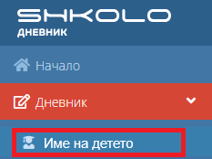
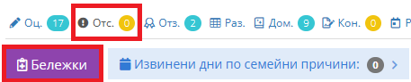
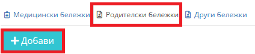
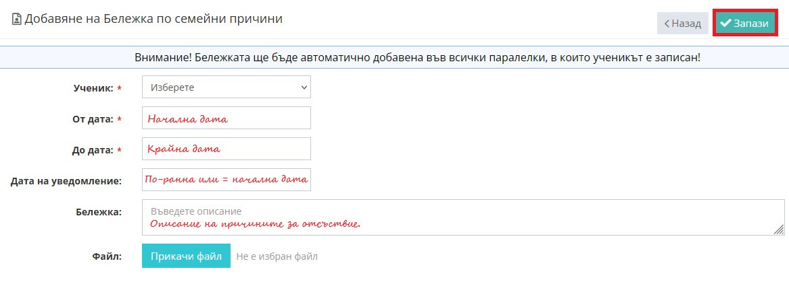
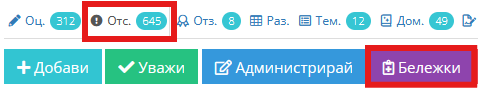
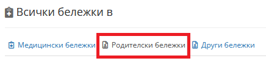
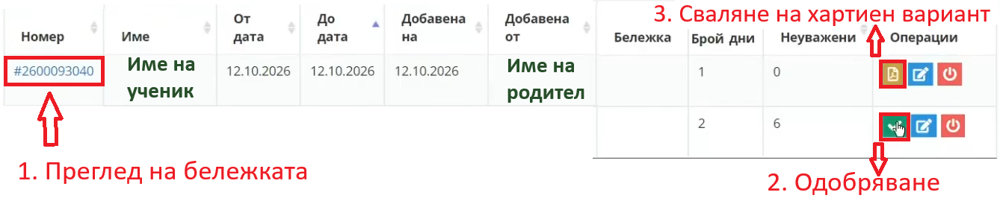

______________________________________________________________________________________________________
1. Родителят добавя бележка в Школо |
_____________________________________________________________________________________________________|
Вписване с профил в shkolo.bg
1. Влизате в меню Дневник -> Избирате детето, на което ще извинявате отсъствията.

2. Избирате меню Отсъствия -> след това Бележки.

3. Избирате меню Родителски бележки -> след това Добави.

4. Въведете периода на отсъствието, като внимавате
датата на уведомлението да е преди или да съвпада с първата дата от периода.

5. Запази
______________________________________________________________________________________________________
2. Класният ръководител одобрява бележката |
_____________________________________________________________________________________________________|
Вписване с профил в shkolo.bg
1. Влизате в меню Дневник -> Избирате паралелка, на която сте класен -> Отсъствия -> Бележки.

2. От менюто избирате -> „Родителски бележки“.

3. Направете преглед, натиснете „Одобряване“, след което „Запази“
(по желание сваляте на хартиен вариант, но не е нужно да се носи в училище).

4. Внимание: Датата на уведомлението трябва да е преди или съвпадаща с началната дата на отсъствието.
Готово! Сега вече отсъствията са извинени и в Школо.